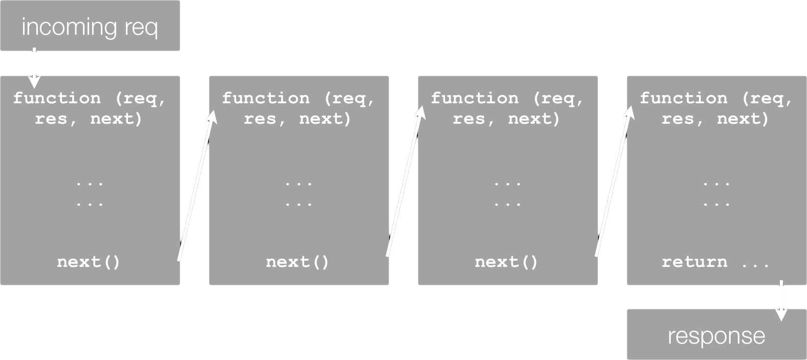
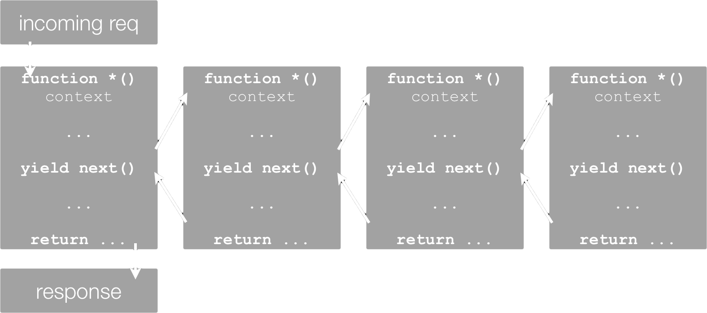

koa
next generation web framework for node js

Simple. Social.
The world's simplest community building, campaigning and fundraising platform.
What is koa?
What THEY say ...
- designed by the team behind Express
- smaller, more expressive, and more robust foundation
- does not bundle any middleware within core
- leverages generators - allows you to ditch callbacks
Why not using koa?
- koa is barebone
- does not include any middleware
- routing is not provided
- many convenience utilities not provided (e.g. sending files)
- still not the same momentum as express
Why koa?
- Extremely minimal - no bundled middelware
- Freedom from callback hell - uses generators (ES6)
- Context - simplifies requests and responses in general
- Cascading - awesome middleware concept, using ES6 generators
- Simplifying error handling - through try/catch
- Speed - aprox 15% more requests handled
- koa is more modular
So lets see what koa is ...
Express
var express = require('express');
var app = express();
app.use(function(req, res, next){
res.send('Hello World');
});
app.listen(3000);
koa
var koa = require('koa');
var app = koa();
app.use(function *(){
this.response.body = 'Hello World';
});
app.listen(3000);
koa context
app.use(function *(){
this; // is the Context
this.request; // is a koa Request
this.response; // is a koa Response
this.req; // Node's request
this.res; // Node's response
this.response.body = ... ;
this.body = ...
});
Let's write an REST-API ...
... and call it in the browser with http://localhost:3000/v1/all
Generator funtions
The function* declaration defines a generator function, which returns a Generator object.
Generator funtions
- Generators are functions which can be exited and later re-entered
- Their context (variable bindings) will be saved across re-entrances.
- Calling a generator function does not execute its body immediately
- An iterator object for the function is returned instead
- When the iterator's next() method is called, the generator function's body is executed until the first yield expression
- So a generator function is controlled from "outside"
Generator example
function* idMaker(){
var index = 0;
while(index < 3)
yield index++;
}
var gen = idMaker();
console.log(gen.next().value); // 0
console.log(gen.next().value); // 1
console.log(gen.next().value); // 2
console.log(gen.next().value); // undefined
// ...
YIELD
- Yo
- I
- Expect a
- Little
- Delay
Express Way
koa Way
A koa application ...
... is an object containing an array of middleware generator functions which are composed and executed in a stack-like manner upon request
Let's write middleware ...
Compare it to Express
... here you have to proxy the real end function.
Error handling ...
koa
Frameworks & Middleware
Summary
- koa is barebone
- Koa relies less on middleware
- koa is very modular
- koa simplifies error handling
- koa is fast
- koa is ES6
Thank you!
© 2015 Sebastian Hildebrandt
| hildebrandt@plus-innovations.com | |
| http://www.plus-innovations.com | |
| @plus-innovations | |
| https://github.com/sebhildebrandt |